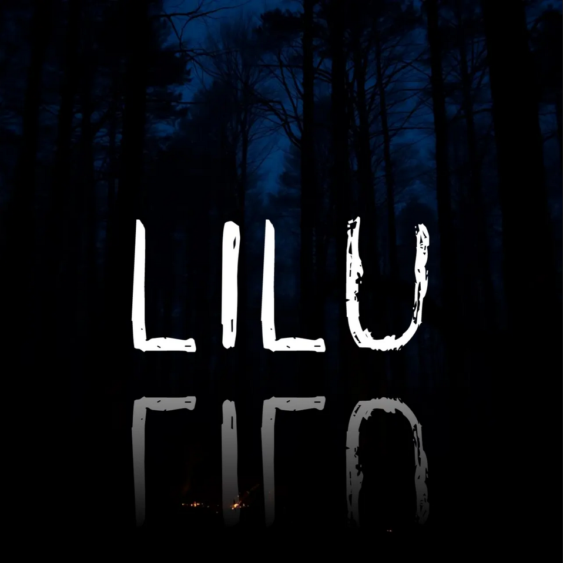
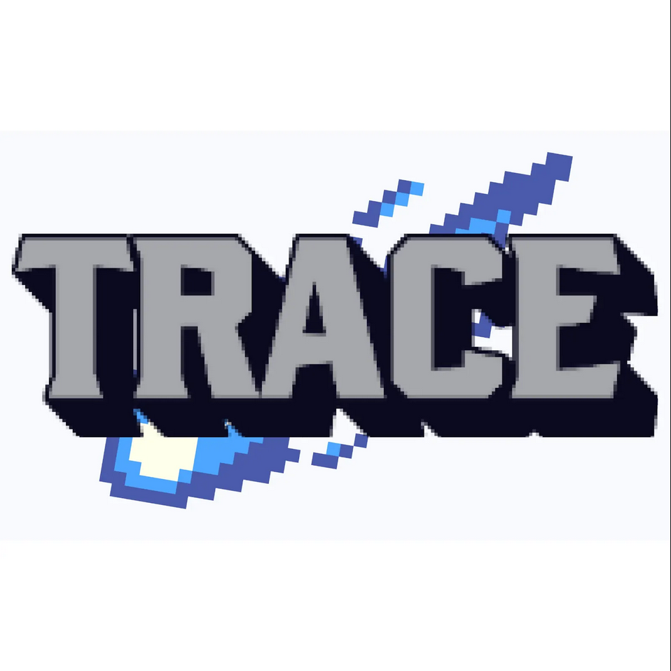
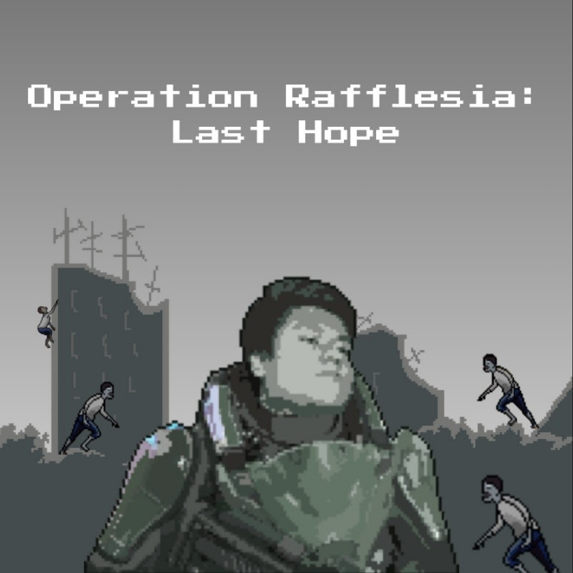
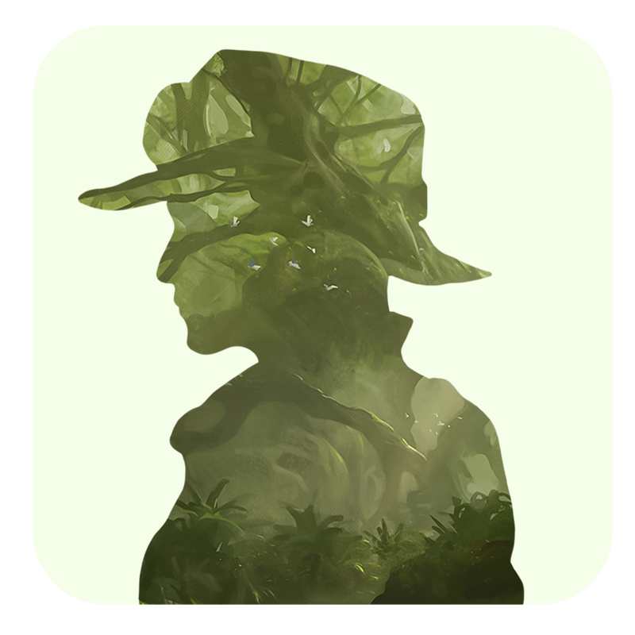
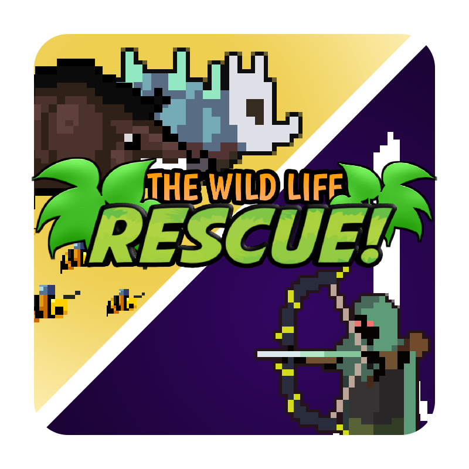

Lampung Selatan, 11 November 2024 – Himpunan Mahasiswa Informatika (HMIF) ITERA bekerja sama dengan Program Studi Teknik Informatika ITERA sukses menggelar PRIMERA Fest 2024, sebuah acara yang memadukan seni dan teknologi. Berlangsung pada hari Rabu, acara ini menghadirkan berbagai kegiatan menarik, termasuk Game Expo dan pertunjukan seni, yang menarik lebih dari 200 pengunjung dari berbagai latar belakang.
Mengusung nama yang berasal dari gabungan kata primer (satu) dan chimera (beragam), PRIMERA Fest menggambarkan keberagaman yang bersatu. Acara ini diinisiasi oleh divisi Seni dan Olahraga HMIF ITERA, khususnya departemen Pengembangan Sumber Daya Anggota (PSDA). Ketua pelaksana, Abraham Ganda atau akrab disapa Bram, menjelaskan bahwa tujuan acara ini adalah menciptakan ruang relaksasi bagi mahasiswa yang sering kali merasa tertekan oleh rutinitas perkuliahan.
“PRIMERA Fest dirancang untuk menggabungkan seni dan teknologi, menciptakan pengalaman yang tidak hanya menghibur tetapi juga menginspirasi,” ungkap Bram.
Game Expo menjadi salah satu sorotan utama dalam PRIMERA Fest dengan tema “Explore The World Through The Game.” Pameran ini menampilkan karya mahasiswa Teknik Informatika dari mata kuliah Teknologi Game.
Menurut Radhinka Bagaskara, S.Si.Kom., M.Si., M.Sc., dosen Teknik Informatika, Game Expo merupakan platform untuk memperkenalkan hasil tugas besar mahasiswa kepada khalayak umum. “Kami berharap, karya-karya ini tidak hanya berhenti di tingkat mata kuliah tetapi dapat dikembangkan menjadi game profesional yang dirilis ke pasar internasional,” ujar Radhinka.
Game Expo juga mendapat dukungan dari berbagai komunitas dan lembaga seperti Komunitas e-Sport Bandar Lampung, Eternal Dream Studio, dan Perwakilan Program Studi Pendidikan Teknologi Informasi UNILA. Kehadiran tamu istimewa dari Bappeda Provinsi Lampung turut memberikan wawasan mengenai potensi game sebagai industri kreatif di masa depan.
| Nama Kelompok | Judul | Icon | Link | Premis Game |
|---|---|---|---|---|
| Groundhog Studio | Lilu |  | https://groundhogstudioifitera.itch.io/lilu | First-person horror berlatar di Sumatera utara dengan karakter utama seorang pria yang mengalami kejadian tak terduga. Kejadian ini memaksanya untuk berpindah antar alam, bertujuan untuk mengembalikan roh seorang korban kecelakaan kembali ke alamnya. |
| HORIZONE | Trace |  | https://horizone-techgameif22.itch.io/trace?authuser=0 | Action hack-and-slash tentang seorang entitas terdampar di Sumatera pasca-apokaliptik Lost Sumatera. Dalam upaya bertahan hidup, ia menjelajahi Lost Sumatera dan mencari tahu rahasia Ancient Sumatera untuk mencari jalan kembali ke dunianya. |
| NoMon Craftworks | Static Noise | https://nomon-craftworks.itch.io/static-noise | Turn-based RPG horror tentang seorang pria menaiki kereta api kembali ke kampung halamannya menemukan dirinya tiba-tiba terlempar ke dunia yang tidak nyata. Pria harus mengungkap rahasia tempat itu dan menemukan jalan keluar. | |
| MANDALA | Legenda Tiga Raja | https://ashokatatangs.itch.io/legenda-3-raja?authuser=0 | TTop down 2D hack-and-slash bertema Sumatera di mana kamu berperan sebagai pewaris pendekar kuno yang harus mengalahkan tiga raja terkutuk dalam pertempuran epik boss rush, sambil mengumpulkan artefak budaya untuk membebaskan roh-roh alam dan memulihkan keseimbangan dunia. | |
| Sigma Skibidi Studio (SSS) | Operation Rafflesia: Last Hope |  | https://daffafahreza4.itch.io/operation-rafflesia-last-hope | 2D side-scrolling shooter yang berlatar di Sumatera apokaliptik, di mana pemain mengendalikan Mayor Ghulwanidris, seorang prajurit elit yang bertugas menemukan vaksin yang terbuat dari bunga Rafflesia yang langka untuk menyelamatkan umat manusia dari wabah zombie. |
| Malas Ngoding | The Forest Keeper |  | https://malasngodingco.itch.io/the-forest-keeper | First-person shooter horror tentang seorang penjaga hutan yang gagal menjalankan tugasnya untuk melindungi satwa langka di sumatera, dan bangkit kembali untuk menebus kesalahannya dengan menyelamatkan hewan-hewan tersebut. |
| MiNOS | Rescue: Save The Wildlife |  | hhttps://minos-studio.itch.io/rescue-save-the-wildlife | Tower defense tentang menjaga kelestarian hewan langka dan terancam punah di Sumatera, dimana John berniat menyelamatkan mereka dengan cara membawanya ke hutan marga satwa. Namun dalam perjalanannya ada banyak rintangan yang menghambat, baik oleh manusia maupun hal disekitarnya. |
| Artemis Production | KKN: The Lost Village | https://artemis-production.itch.io/kkn-the-lost-village | Top down adventure tentang seorang mahasiswa yang sedang melakukan KKN di sebuah desa di Sumatera. Mahasiswa tersebut harus membangun hubungan dengan penduduk lokal, menyelesaikan berbagai tugas, serta menemukan rahasia tersembunyi yang ada pada desa tersebut. | |
| Nufta Studio | Sumatera Survivor | https://nufta.itch.io/sumatera-survivor | Roguelike shoot-em-up tentang menyelamatkan bumi dari roh mistis Sumatera dengan menggunakan benda khas tradisi Sumatera. | |
| NoMon Craftworks | Go Ancient | https://github.com/gabrielfico/tubes-tekgem?authuser=0 | Sidescroller puzzle tentang seorang pencari harta karun yang menimbulkan teka-teki dan petualangan menantang. |
Website ini dibuat untuk memenuhi tugas Mata Kuliah Pemrograman Web